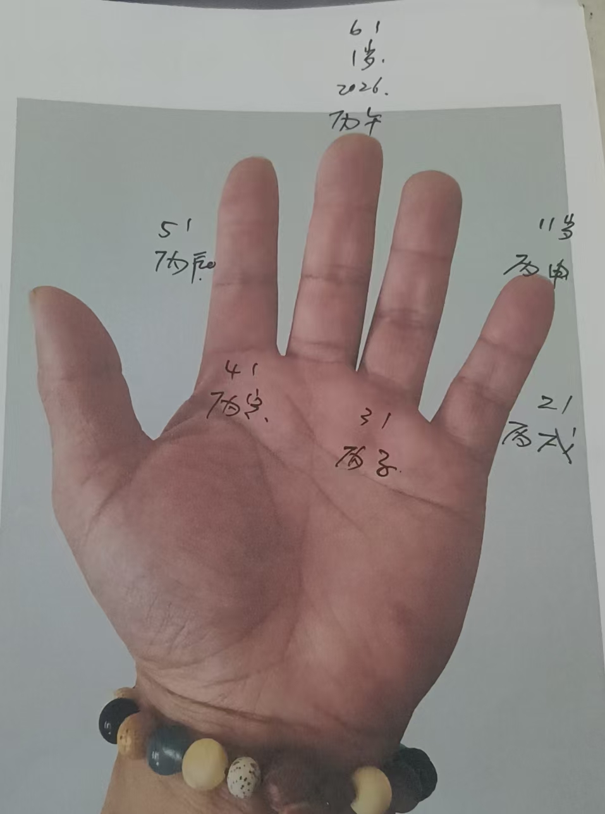
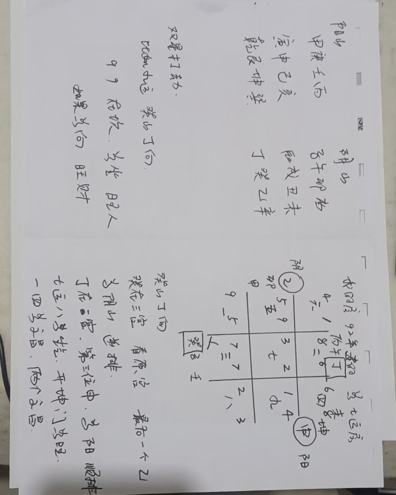
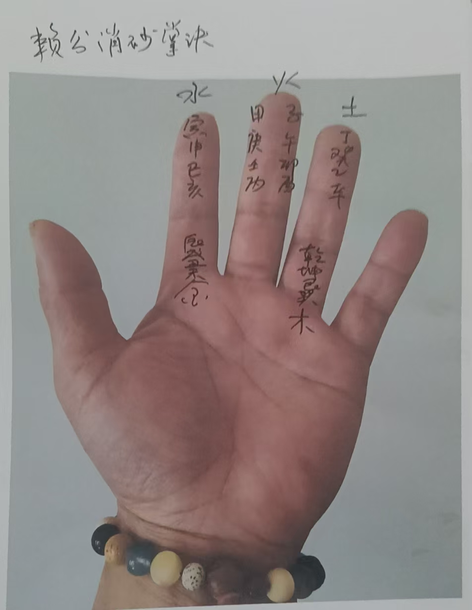

20260205赖公消砂掌诀
符咒术法 原始对话记录


以下为编者整理的主题文章
编者整理 · 主题文章
赖公消砂掌诀：阴宅消砂纳水的掌上功夫
一句话结论：本页只有三张图片、没有文字，属图片类记录。这里围绕标题"赖公消砂掌诀"补一篇知识说明：讲赖公（赖布衣）消砂法的由来、五行消砂的大意、掌诀在手上的用法，并明确本页原记录以图片为主。
一、本页是什么
本页只有三张图片，没有文字，属图片类记录。标题指向"赖公消砂掌诀"，说明内容与阴宅消砂法、掌诀有关。因为原页无字可录，这里按标题补一篇知识性说明，讲清"赖公消砂"是什么、解决什么、掌诀大致怎么用。本页原记录以图片为主，具体口诀以图片为准。
二、赖公是谁
"赖公"通常指赖文俊，号布衣，是传统堪舆中的名家，后世称"赖布衣"。以他名号流传的"赖公消砂法"（也叫消砂纳水法）在阴宅里影响很广，讲的是如何在人盘中针的体系上判断四周砂体（山头、高地、建筑）对坐山的生克吉凶。
三、消砂法要解决什么
阴宅看地，传统上抓三样：砂（周围高起之物）、水（来去水路）、向（坐向）。消砂，就是以坐山的五行为"我"，逐一去比对四周砂的五行，看它们是生我、比和、我克、克我、我泄，从而定吉凶。这是"消砂"与"纳水"并列的两大功课之一。
四、五行消砂的大意
传承中大致按生克分吉凶：生我、比和、我克为吉；克我、我泄为凶。
| 砂与坐山的关系 | 传统取吉凶 |
|---|---|
| 生我 | 吉 |
| 比和 | 吉 |
| 我克 | 吉 |
| 克我 | 凶 |
| 我生（泄） | 凶 |
不同流派对"砂的五行"取法（正五行、玄空五行、消砂五行等）并不一致，掌诀就是把这些对应关系记在手上、随用随掐。
五、掌诀在手上怎么用
所谓掌诀，是把方位与五行排布到手掌的固定位置上（思路可参见本集群《玄空知识风水篇01十天干掌诀》）。临场看地时，左手掐方位，右手推生克，不必翻书。本页只有图，具体指法以图片为准，这里不臆造口诀。
六、常见问题
问：消砂和纳水是一回事吗？ 不是。消砂看高处，纳水看低处与来去水路，两者合称"消砂纳水"。
问：原页为什么只有图？ 这是图片类记录，可能拍摄于看地或上课现场，文字没有留下，故本文只作知识铺垫。
问：赖公消砂能直接定吉凶吗？ 本页属传统堪舆文化的整理，不构成任何现实承诺；真实看地还需结合地形、水路等多方因素。
七、提醒
- 本页原记录以图片为主，无文字；
- 消砂是阴宅"消砂纳水"的一半，另见本集群《看风水·整个家族的阴宅》；
- 内容仅供传统文化研究参考。
说明与免责：本站为民间修炼、民俗文化与传统文化资料的整理与记录，内容源自传承者口传与个人修习体会，仅供文化交流与研究参考，不构成医疗、健康、投资或任何功效承诺。所述内容属传统术数范畴，请理性看待；如身体不适，请及时就医。请遵守法律法规与公序良俗。